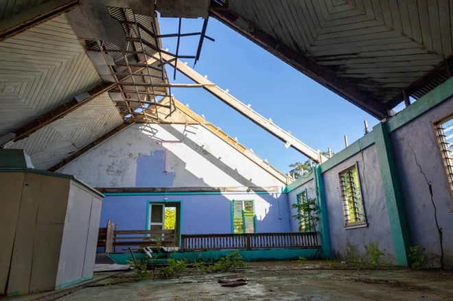

Dự án di dời cả một đất nước đang đứng trước nguy cơ hoàn toàn biến mất
Ở đảo quốc Fiji, biến đổi khí hậu đang đẩy những ngôi làng chìm xuống đại dương từng ngày.
Trong 4 năm qua, một lực lượng đặc nhiệm của chính phủ
Fiji đã lên một kế hoạch đặc biệt: di cư cả đất nước.
Kế hoạch được đưa ra dài tới 130 trang văn bản, xen kẽ
với các biểu đồ mạng nhện phức tạp và các mốc thời gian
chi tiết. Đây là kế hoạch kỹ lưỡng nhất từng được đưa ra
để giải quyết một trong những hậu quả cấp bách nhất của
khủng hoảng khí hậu: mực nước tăng cao khiến nhà cửa,
cộng động không còn chỗ sinh tồn.
Di chuyển từng căn nhà và sau đó là cả quốc đảo
Đảo quốc Fiji nằm ở nam Thái Bình Dương, cách Australia
1.800 dặm về phía đông có hơn 300 hòn đảo và dân số dưới
1 triệu người. Giống như hầu hết Thái Bình Dương, nó rất
dễ bị ảnh hưởng bởi các tác động của biến đổi khí hậu.
Nhiệt độ bề mặt và nhiệt độ đại dương ở các vùng phía
tây nam Thái Bình Dương đang tăng nhanh gấp 3 lần so
với tốc độ trung bình toàn cầu. Những cơn lốc xoáy nghiêm
trọng thường xuyên tàn phá khu vực. Vào năm 2016, Bão Winston
tấn công Fiji, làm 44 người thiệt mạng và gây thiệt hại 1,4 tỷ USD,
chiếm 1/3 GDP của cả nước. Kể từ đó, Fiji đã phải hứng chịu thêm 6 cơn bão nữa.
Những gì Fiji đang cố gắng làm là chưa từng có. Trong
nhiều năm, các chính trị gia và nhà khoa học đã nói
về viễn cảnh “di cư khí hậu”. Ở Fiji và phần lớn Thái
Bình Dương, cuộc di cư này đã bắt đầu. Ở đây, câu hỏi
không còn là liệu các cộng đồng có bị buộc phải di chuyển
hay không, mà là làm thế nào để làm điều đó một cách quy củ.
Hiện tại, 42 ngôi làng ở Fiji đã được đánh dấu để di dời trong
vòng 5 đến 10 năm tới. 6 ngôi làng đã được di chuyển. Mỗi cơn
lốc xoáy hoặc thảm họa mới đều mang theo nguy cơ có thêm nhiều
ngôi làng bị thêm vào danh sách.
Di chuyển một ngôi làng trên địa hình đồi núi tươi tốt của Fiji
là một nhiệm vụ phức tạp. “Chúng tôi phải liên tục cố gắng giải
thích cho người dân. Chuyện này không chỉ là dỡ bỏ 30 hay 40 ngôi
nhà trong một ngôi làng và di chuyển chúng lên vùng cao hơn. Tôi
ước gì nó chỉ đơn giản như vậy”, Satyendra Prasad, đại sứ của Fiji
tại Liên Hợp Quốc nói với The Guardian.
Ông liệt kê ra một danh sách những thứ cần phải di chuyển cùng với
nhà cửa: Trường học, trung tâm y tế, đường xá, điện, nước, cơ sở
hạ tầng, nhà thờ,... “Và sau khi bạn có thể di dời xong những thứ
đó, bạn phải di dời nghĩa trang. Di dời người sống đã khó, người
chết còn khó gấp bội”, Prasad nhấn mạnh những thách thức là quá
nhiều, không chỉ gồm khó khăn tài chính, chính trị, mà thậm chí
cả tinh thần.
Cuộc sống mới ở vùng đất mới
Vunidogoloa, một ngôi làng có khoảng 140 người trên Vanua Levu,
hòn đảo lớn thứ hai của đất nước nổi tiếng vì một lý do kỳ lạ:
Đây là nơi đầu tiên được di dời do biến đổi khí hậu. Nó đã thu
hút nhiều du khách trong những năm qua. Sailosi Ramatu, một hướng
dẫn viên bản địa thường đưa du khách tham quan các địa điểm của cả
ngôi làng mới và cũ đã có những chia sẻ thú vị.
Ramatu (62 tuổi) là trưởng làng vào năm 2014 - thời điểm mọi người
phải chuyển đi. Vunidogoloa cách thị trấn chính Labasa của hòn đảo
2 giờ lái xe. Ông đưa du khách tới ngôi làng cũ và chỉ đây là nơi
ông được sinh ra, cũng là nơi ông luôn tưởng mình cũng sẽ lìa đời.
Bây giờ nó là một ngôi làng ma. Khoảng 20 ngôi nhà bỏ hoang vẫn đứng
vững, gió rít qua những cánh cửa mở và những ô cửa sổ bị hỏng.
Mái nhà bị sập, ván sàn bị mất, cỏ hoang mọc um tùm. Nơi từng là một
bãi cỏ tươi tốt, nơi mọi người gặp nhau để ăn uống giờ là một đầm lầy.
Các cuộc thảo luận về việc di chuyển Vunidogoloa bắt đầu một cách
nghiêm túc vào khoảng năm 2004. 2 năm sau, cộng đồng đã thống nhất
với chính quyền tỉnh và yêu cầu hỗ trợ di dời. Phải mất hơn một thập
kỷ chờ đợi, họ mới có được ngôi làng mới ở cách xa đất liền hơn một
dặm và cao hơn rất nhiều.
Vunidogoloa mới bao gồm 30 ngôi nhà màu xanh lá cây nhạt nằm rải
rác trên một sườn đồi xanh mướt. Trong ngôi nhà của Sera Naidrua,
một người phụ nữ 74 tuổi, những tấm vải đầy màu sắc treo trên tường
và làn gió mát thổi qua những ô cửa sổ và cửa ra vào đang mở.
Khi Naidrua rót trà nguội vào những chiếc cốc nhựa sáng màu, bà xúc
động kể về ngôi làng cổ. Bà nhớ lại khi còn nhỏ mình đã hái quả dilo
mọc dọc bờ biển như thế nào và dùng chúng để chơi bi ra sao. Nhưng
cuối cùng, bà nói: "Đó là một quyết định đúng đắn khi chuyển đến đây.
Trước đây chúng tôi luôn lo sợ về tính mạng vì lốc xoáy, sóng đánh vào
làng. Bây giờ ở đây chúng tôi cảm thấy an toàn hơn".
Trong công cuộc tái định cư, Vunidogoloa đã may mắn. Dân làng không phải
thương lượng với một thị tộc lân cận hoặc với chính phủ để có đất chuyển đến.
Dù chính phủ Fiji tài trợ một phần lớn cho việc di dời và Tổ chức Lao động Quốc tế
ung cấp kinh phí để trả lương cho người lao động xây dựng, tự người dân làng đã đóng
góp phần lớn nguồn lực.
Những người chẳng có nơi nào để đi
Người dân ở làng Nabavatu thì không may mắn như vậy. Cho đến năm ngoái,
không ai ở đây xem xét việc phải di dời. Ngôi làng được xây dựng trên
một ngọn đồi trên đảo Vanua Levu nhìn ra dòng sông Dreketi hùng vĩ
tưởng chừng như không cần lo lắng gì với vấn đề mực nước biển dâng.
Thế nhưng hóa ra vùng đất đang bị nhiễm độc dần dần. Vào tháng 1/2021,
nó bị ảnh hưởng bởi Bão Ana.
18 tháng sau cơn bão, ngôi làng vẫn còn là một cảnh hoang tàn. Hội
trường làng, nơi được cho là trung tâm sơ tán trong trường hợp xảy
ra lốc xoáy đã bị phá hủy. Trần nhà của nó bị thủng, cửa sổ và cửa
chớp bị thổi tung. Sau cơn lốc xoáy là mưa xối xả, biến ngọn đồi thành
bùn và khiến đất bên dưới những ngôi nhà, đường xá và tòa nhà bị trơn trượt.
Hầu hết các tòa nhà, bao gồm cả nhà thờ trên đỉnh đồi, được sơn
bằng phấn màu sáng - vốn tạo nên vẻ đẹp lộng lẫy đặc trưng của
ngôi làng - đã xuất hiện những vết nứt sâu từ nền móng lên đến
mái nhà. Khi một đội khảo sát của chính phủ đến, họ nói với dân
làng rằng mặt đất quá không ổn định để họ ở lại. Họ phải rời đi, mãi mãi.
Vào tháng 7, gần 400 người Nabavatu vẫn sống trong các lều thảm họa
hơn một năm. 38 chiếc lều này nằm trong khuôn viên của một nhà thờ.
Không có điện ở đây, mọi người chỉ có thể sử dụng pin năng lượng mặt
trời nhỏ để có ánh sáng. Để tiếp tục đọc hoặc làm bài tập sau khi màn
đêm buông xuống, trẻ em dùng đèn pin trên điện thoại nếu có. Nguồn cung
cấp nước bị rò rỉ và không có đủ nhà vệ sinh. Vào ban ngày, những chiếc
lều quá nóng để trẻ em có thể ở trong đó một cách an toàn. Còn vào ban đêm,
các lều lạnh cóng.

Không ai còn tranh cãi chuyện liệu Nabavatu cần di dời hay không nữa.
Dù là nơi chôn rau cắt rốn, hàng trăm người dân nơi đây đều khao khát
được chuyển đi vì miền đất mẹ của họ đã bị phá hủy. Vấn đề là không có
vùng đất nào phù hợp có thể tiếp nhận họ.